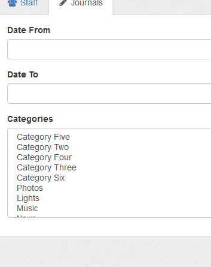

Journals
Journals can be exported based on category and / or date range (published date). Click in the date boxes to launch calendar to select dates. Both must be set or leave blank to ignore. At least one category or date range must be set. Use ctrl key to make category selections.
